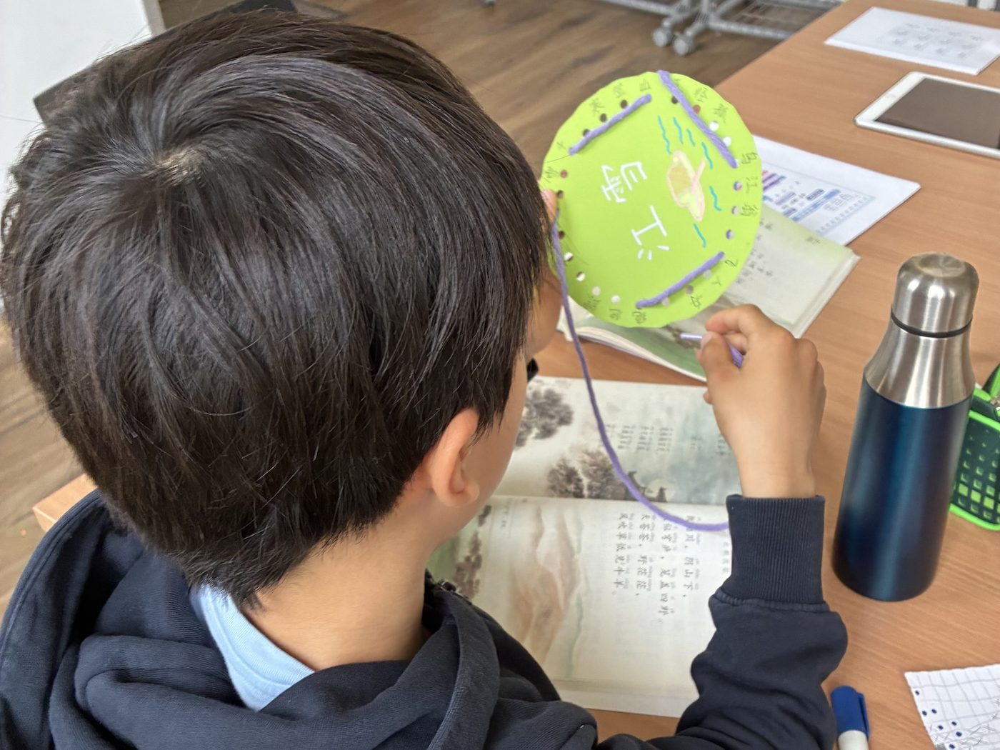
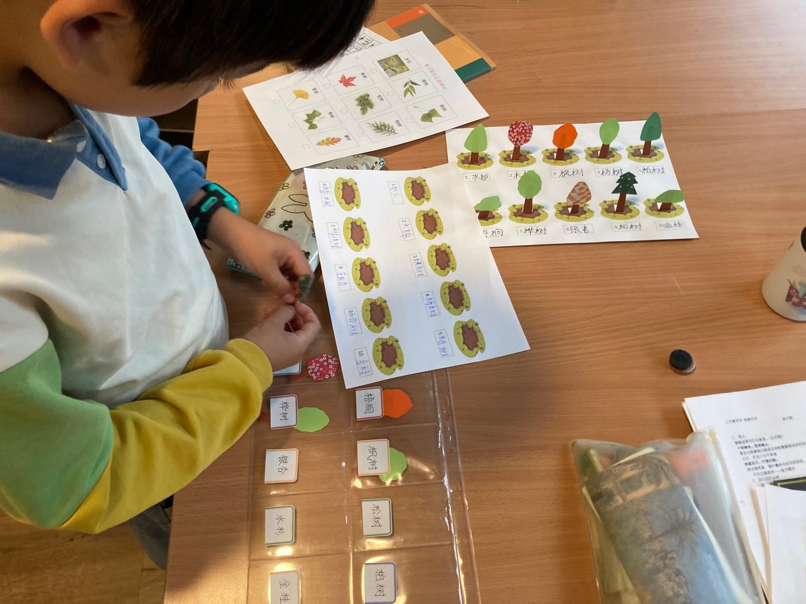
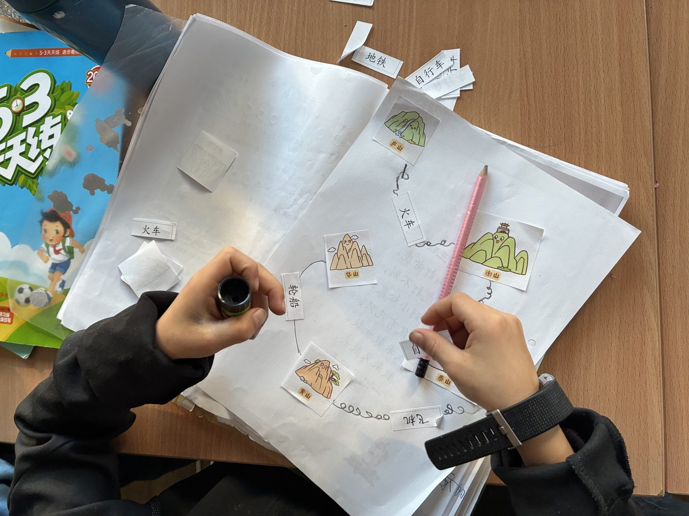
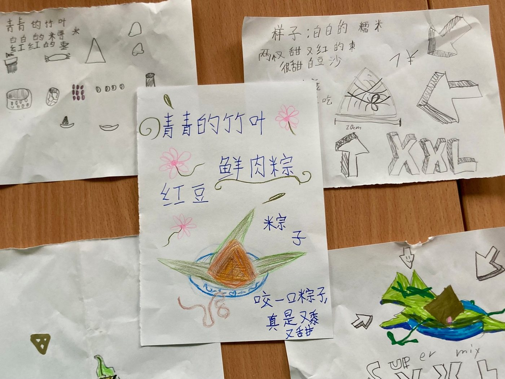

教学理念 · Unser Ansatz
青，取之于蓝，而青于蓝。
荀子
汲取·成长·超越
这是青蓝中文想陪伴孩子们走过的学习之路
学习从兴趣开始 Lernen beginnt mit Interesse

在非母语环境中学习母语，挑战不仅在于语言学习本身，还在于缺少持续的学习动力。
如果德语连接着学校、朋友、游戏和生活，而中文却意味着背诵、作业和练习，那么学中文很容易变成一项沉重的负担。所以，我们首先要解决的，不只是「教什么」，还有如何让孩子愿意学下去。
我们根据不同的学习内容和孩子的个体差异来进行教学设计，绘本故事、课堂游戏、角色扮演、可操作的教具，都是帮助孩子进入学习的方式。比如把《小壁虎借尾巴》《拔萝卜》改编成多角色短剧，孩子在表演和对话中自然掌握句型表达；古诗背诵有点枯燥，但如果和穿绳游戏结合，孩子会在不知不觉中熟悉诗句；拼音学习也可以融入系列探险故事……我们希望用这些设计，让中文学习变得生动起来。
和生活发生联系 Lernen mit dem Leben verbinden

课本不是学习的终点，而是进入真实世界的入口。中文只有与生活联结，在真实的情境中被使用，才真正有意义。
虽然每周只有一次中文课，我们仍会尽可能将学习内容扩展到孩子的生活中去。比如学完《树之歌》，孩子们会带着词语清单去户外搜集树叶；学完故事《称赞》，他们会给其他小朋友写称赞卡并互相赠送。识字、阅读和写字，在这种具体情境中自然有了用武之地。
这种联结还能从孩子身边的生活延伸到中国。在学《我多想去看看》时，孩子们不仅能观察中国地图，还可以思考和表达「我想去哪里看看」。
用中文去创造 Mit Chinesisch gestalten


学中文不只是掌握「听说读写」，更是认识和创造世界的一种方式。
「创造」可以发生在细微之处：讲一个自己的故事，设计一张卡片，写一篇日记，或者画一幅中文漫画。比如在学习《黄山奇石》《望庐山瀑布》单元时，除了学习课文，我们还会认识中国名山，再结合之前学过的交通工具主题，让孩子们规划自己的旅行路线。在学习《端午粽》时，孩子们可以发挥想象，设计自己独创的粽子，再介绍它的口味和馅料。
随着年龄增长和中文能力的提升，他们会逐渐尝试更复杂的项目——设计海报、制作视频、编排短剧、开展主题活动……把不同阶段学到的语言知识融会贯通起来，进行自由的表达与创作。
当孩子开始用中文主动表达自己的想法、完成自己想做的事情时，语言才真正从书本上的知识，变成了属于他们自己的能力。